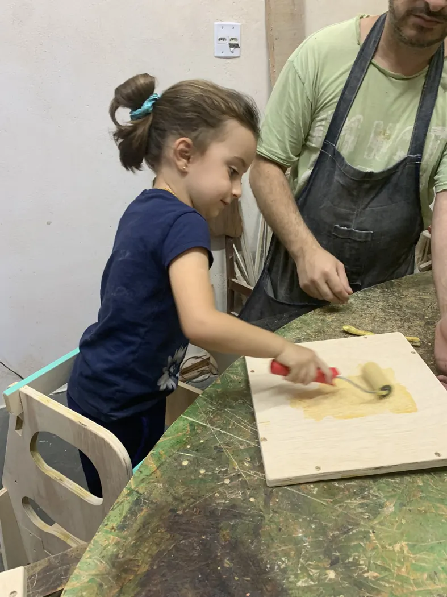
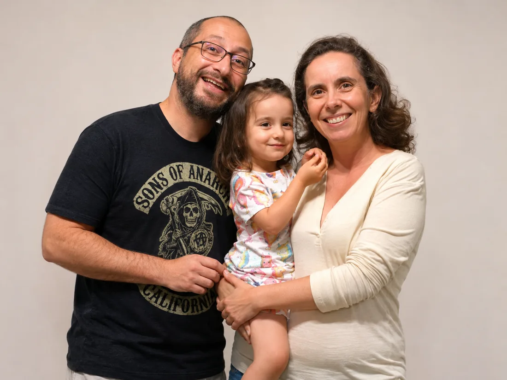

Uma marca autoral que transforma madeira em peças pensadas para a infância, a autonomia e os momentos em família.
Minha relação com a madeira começou muito antes de existir a Pau D'Alho. Entre carrinhos de rolimã, guitarras improvisadas, miniaturas de ambientes e visitas ao quartinho de ferramentas do meu pai, criar e construir sempre fizeram parte da minha vida. Anos depois, foi preciso uma grande mudança para reencontrar esse caminho.
Cada produto nasce de um processo cuidadoso, com olhar atento ao uso real, à durabilidade e à beleza de peças que dialogam com o universo infantil.
A marca acredita que a criança aprende melhor quando participa da rotina, explora o ambiente e se sente capaz de interagir com o mundo à sua volta.
Os produtos são pensados para apoiar famílias que valorizam presença, criatividade, organização e momentos significativos no dia a dia.

Quando criança, adorava inventar e construir coisas. Carrinhos de rolimã, guitarras improvisadas e tantas outras criações nasciam da curiosidade e da vontade de transformar ideias em algo concreto. O quartinho de ferramentas do meu pai era um dos meus lugares preferidos — e frequentemente alvo das minhas incursões em busca de materiais para mais uma invenção.
Na adolescência, vieram as miniaturas de ambientes e outros projetos feitos à mão. Criar, montar, experimentar e descobrir como as coisas funcionavam sempre fizeram parte da minha vida.
Mas, como acontece com tanta gente, os caminhos profissionais me levaram para outra direção.
Durante anos, trabalhei com marketing no setor hoteleiro. Era uma carreira estável e eu gostava do meu trabalho. Saía de casa, em Mogi das Cruzes, por volta das cinco da manhã, rumo a São Paulo, e muitas vezes só retornava perto das nove da noite.
O que mais me incomodava não eram as horas de trabalho, mas o que eu deixava de viver em casa. Muitas vezes, quando chegava, a Júlia já estava dormindo e a Roberta, depois de um dia inteiro cuidando dela, também estava exausta. Eu sentia falta de participar mais da rotina das duas, de acompanhar de perto a infância da minha filha e de estar presente nos momentos simples da nossa família.
A vontade de trabalhar com madeira já vinha crescendo havia algum tempo. A pandemia trouxe incertezas, mas também a oportunidade de repensar prioridades. Foi nesse período que reencontrei o prazer de trabalhar com as mãos, criar projetos e transformar madeira em peças de verdade.
Aquele universo que havia começado na infância, entre ferramentas, serragem e invenções, estava novamente presente na minha vida.
Foi assim que nasceu a Pau D'Alho – Ideias Criativas.
Mais do que uma mudança profissional, a marca representa uma escolha: buscar uma vida com mais presença, autonomia e espaço para criar.
Hoje, cada móvel e brinquedo que sai da nossa oficina carrega um pouco dessa trajetória. São peças feitas artesanalmente, inspiradas nas descobertas da infância e na vontade de proporcionar às famílias aquilo que também aprendi a valorizar: tempo juntos, experiências e memórias que permanecem.
Quem está por trás da Pau D'Alho
A Pau D'Alho nasceu de uma escolha por mais presença e tempo juntos. É a nossa vivência como família que inspira a criação de móveis e brinquedos pensados para fazer parte das descobertas de outras crianças.

Conheça as linhas da Pau D'Alho e encontre o que faz sentido para a sua família.
Se você está buscando um produto específico ou quer entender qual peça faz mais sentido para a sua casa, fale com a gente no WhatsApp.
Conversar com a Pau D'Alho